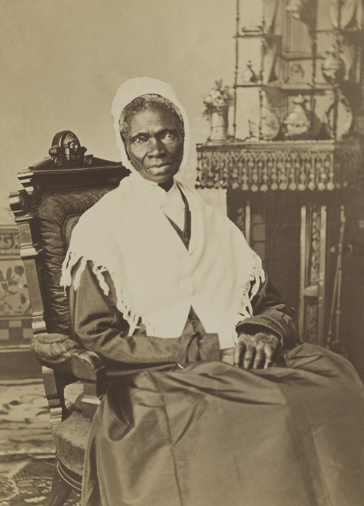

Directions: Read the background and the two records, then answer the questions.

Background. Sojourner Truth spoke at the women's rights convention at Akron, Ohio, in May 1851. Two texts of her speech survive. Record 1 is Marius Robinson's report, printed in the Anti-Slavery Bugle of June 21, 1851. Robinson was the convention's secretary. Record 2 is Frances Dana Gage's version, published in 1863. Gage had presided at the convention. Truth was born enslaved in New York and spoke Dutch as a child.
Record 1, Robinson, 1851. May I say a few words? I want to say a few words about this matter. I am a woman's rights. I have as much muscle as any man, and can do as much work as any man. I have plowed and reaped and husked and chopped and mowed, and can any man do more than that? I have heard much about the sexes being equal. I can carry as much as any man, and can eat as much too, if I can get it. I am as strong as any man that is now. As for intellect, all I can say is, if a woman have a pint and a man a quart--why can't she have her little pint full? You need not be afraid to give us our rights for fear we will take too much, for we can't take more than our pint will hold. The poor men seem to be all in confusion, and don't know what to do. Why children, if you have woman's rights, give it to her and you will feel better. You will have your own rights, and they won't be so much trouble.
Record 2, Gage, 1863. Well, children, where there is so much racket there must be something out of kilter. I think that 'twixt the negroes of the South and the women at the North, all talking about rights, the white men will be in a fix pretty soon. But what's all this here talking about? That man over there says that women need to be helped into carriages, and lifted over ditches, and to have the best place everywhere. Nobody ever helps me into carriages, or over mud-puddles, or gives me any best place! And ain't I a woman? Look at me! Look at my arm! I have ploughed and planted, and gathered into barns, and no man could head me! And ain't I a woman? I could work as much and eat as much as a man, when I could get it, and bear the lash as well! And ain't I a woman? I have borne thirteen children, and seen most all sold off to slavery, and when I cried out with my mother's grief, none but Jesus heard me! And ain't I a woman? [...] If the first woman God ever made was strong enough to turn the world upside down all alone, these women together ought to be able to turn it back, and get it right side up again! And now they is asking to do it, the men better let them. [...]
1. State Truth's pint and quart argument from Record 1, in your own words.
2. State the repeated question in Record 2, and name one piece of Truth's life she offers as proof after asking it.
3. Define slave narrative from the lesson's vocabulary, and name the author and book in this lesson that fit the definition.
4. A student wants to quote Truth's exact words in a paper. State which record she should quote, and defend the choice with two facts about how and when each record was made.
1. State the pint and quart argument. If a woman has a pint measure and a man a quart, she should be allowed to have her little pint filled full. She cannot take more than her pint will hold, so men need not fear giving women their rights. Truth's underlying claim is that rights are not taken from a fixed store held by men; granting them costs the holders nothing they can keep. (Blueprint 4)
2. State the repeated question and a proof. The question is, ain't I a woman. Her proofs include that she has ploughed and planted and gathered into barns with no man able to head her, that she could work and eat as much as a man and bear the lash as well, and that she bore thirteen children and saw most of them sold off to slavery. Any one of these earns the point. (Blueprint 4)
3. Define slave narrative and name the lesson's example. A slave narrative is the first person account of slavery by a formerly enslaved person, published with sponsors' authenticating documents, the genre that supplied the antislavery movement with its evidence and its witnesses from the 1840s onward. The lesson's example is Harriet Jacobs's Incidents in the Life of a Slave Girl, published in 1861 under the name Linda Brent. (Blueprint 3)
4. Which record should she quote? Record 1, Robinson's. It was written down by the convention's own secretary and printed in the Anti-Slavery Bugle on June 21, 1851, within weeks of the speech. Gage's version was published twelve years later, in 1863, and it added the repeated refrain and a southern dialect, though Truth was born in New York and spoke Dutch as a child. Gage's text is evidence of the speech's fame, not a reliable record of its words. (Blueprint 4)
Teacher note. This check is formative. Question 4 is the entry diagnostic: students who choose Gage because its words are famous have put recognition ahead of provenance, and the correction is the lesson's method in miniature. Question 3 ties the genre definition to the book the writing task draws on.